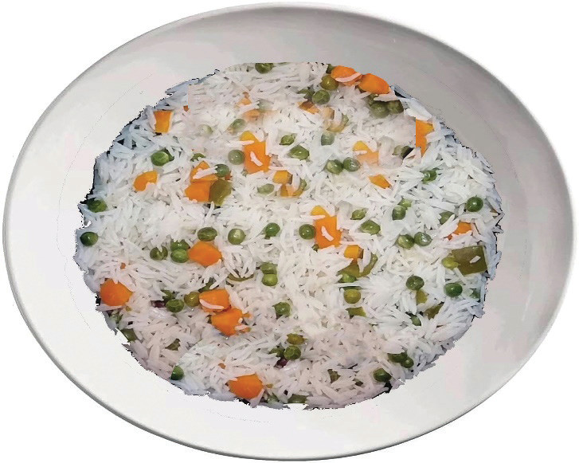

Method
- 1. Boil green grams in just enough water that covers them.
- 2. Sort, wash and drain the rice.
- 3. Cook the rice. The boiling water should be at the same level as the rice.
- 4. Peel and slice the onions and carrots.
- 5. Prepare 200 ml of coconut milk.
- 6. Fry the onions.
- 7. When the green gram is nearly ready, add it to the fried onions.
- 8. Add rice and carrots to the green gram and onions.
- 9. Pour coconut milk into the mixture and stir it occasionally. The coconut milk should be just enough to finish cooking both the rice and the green grams, without making the mixture either too wet or too dry.
- 10. Cook slowly until ready and serve it as shown in Figure 6.5.

Figure 6.5: Mseto

Activity 6.3
Preparation of mseto
Prepare, cook and serve the mseto dish using green gram or any other pulses available in your area by following the appropriate methods.
(i) What challenges did you face in preparing the dish?
(ii) How did you solve them?
(iii) Assess the quality of the prepared dish.
135